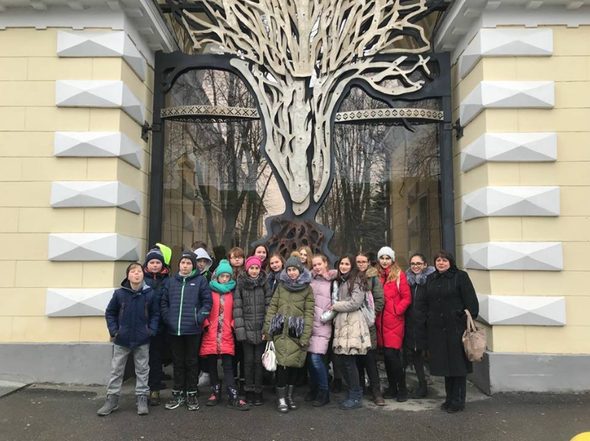

Сайт гіммназистів та їх великих досягнень
проект учнів: Владислав Вештак(редактор:відео/фото) та Артём Любченко(программіст/дизайнер)
5 грудня учні Гребінківської гімназії відвідали виставку традиційного та сучасного японського мистецтва «Уявний путівник. Японія», що проходить у Мистецькому арсеналі.
Юні поціновувачі прекрасного милувалися роботами сучасних японських художників та експонатами з колекцій українських державних музеїв Києва, Львова, Одеси, Дніпра.
А інтерактивний простір дозволив їм спробувати самостійно малювати комікси Манґа та ієрогліфи, складати орігамі та гратися у традиційні японські іграшки.
Протягом року Японії в Україні в Гребінківській гімназії було організовано та проведено низку заходів, спрямованих на знайомство з традиціями і культурною спадщиною унікальної країни. Екскурсія до Мистецького арсеналу стала яскравим завершенням року Японії в житті гімназистів. Наразі триває рік німецької мови в Україні. Отож, далі буде…
